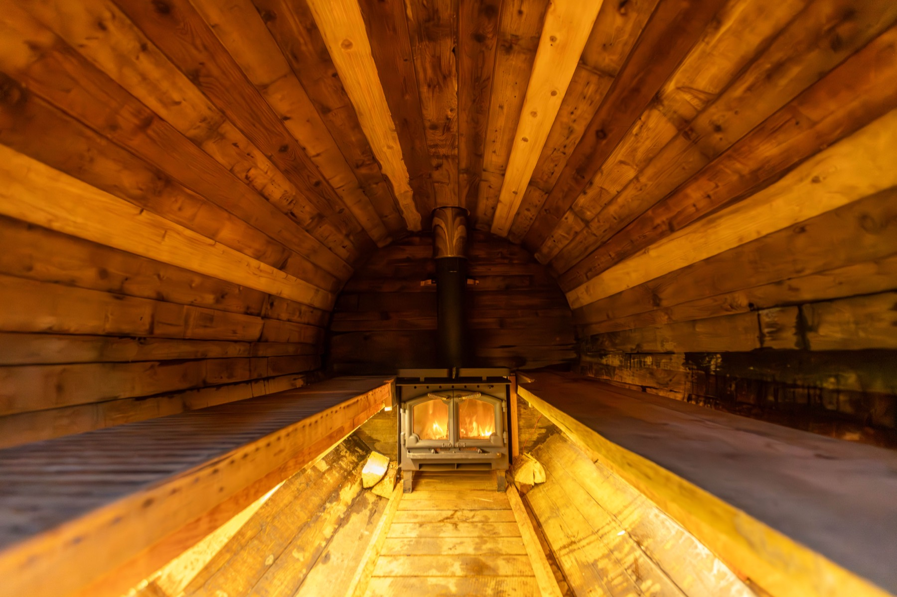
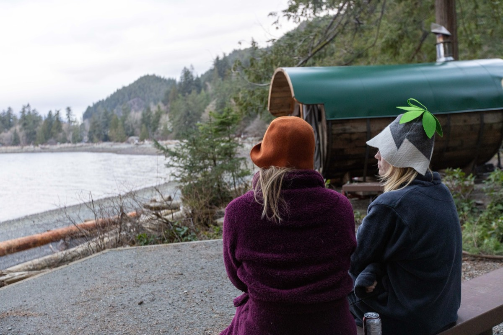

You've skied top to bottom, your legs are done, and the hot tub at the condo is full of strangers. Picture this instead: a private wood-fired sauna and cold plunge waiting at your chalet, just for your group.
Why sauna after skiing?
A sauna after a cold day on the hill warms you right through, loosens up tight muscles, and gives the evening a slow, social rhythm. Plenty of skiers swear by it for feeling better the next morning. Mostly, though, it just feels fantastic.
How après-ski sauna works
- Book ahead. Send a booking request for your dates and describe where you're staying.
- We deliver. Glenn delivers and sets up the barrel sauna and cold plunge tub at your place.
- Ski all day. Light the fire when you get back and give it time to heat. It reaches up to about 90°C.
- Hot, cold, rest, repeat. Your 24-hour window is private, so there's no rushing.

Staying in a rental? Ask your host first
Most Whistler chalets and condos are rentals, and the sauna needs a spot to set up. Get your host's OK before you book, and include the details in your request so Glenn can confirm it works. (More on that in our guide to renting a sauna for your Whistler cabin or Airbnb.)
Make it a ski-week ritual
Here for the week? A full week is $1,500, so the sauna is ready every night after the lifts close. A single 24-hour session is $325.
What's included
- Delivery and setup in Whistler, Squamish or Pemberton
- The wood-fired barrel sauna, which fits 8 people comfortably
- Firewood, plus extra bundles at $15 if you'll be firing it all night
- A cold plunge tub (delivered empty; fresh snow works too)
Optional add-ons: towel & robe kits ($45 per person), sauna hats ($5), a fire pit ($20), a tent ($20) and an essential oil setup ($15).

Après-ski sauna tips
- Light the fire as soon as you're back so it's hot by the time you've changed.
- Drink water first. A day of skiing at altitude plus a sauna adds up.
- Save the beers for after your last round.
- Wear a felt sauna hat so your head stays cool while your legs get the heat.
- Roll in the snow between rounds if you're brave.
How booking works
Hit Book Now, pick your dates and any add-ons, and send a request. Nothing is charged to send it, and you can include questions. Your dates are held for 48 hours while Glenn reviews the request. Once it's approved you'll get an email link to pay a $100 deposit, which confirms the booking. The balance is sent as a payment link three days before your session.
A few safety basics
- Drink water before, during and after. You sweat more than you think.
- Skip the alcohol until you're done. Heat and drinks don't mix.
- If you're pregnant or have a heart condition, low or high blood pressure, or another medical condition, check with your doctor before using a sauna or cold plunge.
- Get out if you feel dizzy, nauseous or unwell, and never sauna or plunge alone.
- Keep the fire contained and the area around the stove clear.
More reading: Renting a Sauna for Your Whistler Cabin or Airbnb: What to Know First · Whistler sauna guide